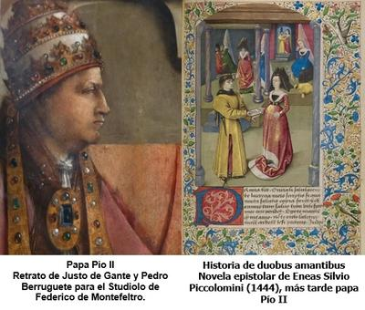

Entre los innumerables contrastes y paradojas de la Iglesia católica, pocos resultan tan curiosamente irónicos como la vida del joven italiano Eneas Silvio Piccolomini (1405-1464), quien llegaría a convertirse en papa de la Iglesia católica bajo el nombre de Pío II desde el 19 de agosto de 1458 hasta su fallecimiento.


Los padres de Eneas, aunque pertenecían a una estirpe noble, no eran adinerados, por lo que tuvieron que esforzarse para que el joven pudiera estudiar. Así, a los 18 años lo enviaron a la ciudad de Siena, donde sin muchos ánimos, Eneas tomó cursos jurídicos, los cuales alternó con apasionadas lecturas de los clásicos grecolatinos. También trabajó por su cuenta, y a los 26 años se había convertido en un sagaz latinista, capaz de escribir en esa lengua de modo sencillo, elegante y eficaz, además de volverse un maestro de la retórica. Entre sus talentos llegó incluso a componer versos latinos.
Como intelectual sin dinero, se le presentó al joven Eneas la alternativa de dedicarse a una de dos ocupaciones lucrativas: la Iglesia o la abogacía. Sin embargo, la jurisprudencia le hastiaba, por lo que decidió entrar al servicio de jerarcas de la Iglesia, como secretario, orador y diplomático, y después, también como secretario y negociador de personajes de la nobleza. Esto lo llevó a recorrer y conocer varios países de Europa, y a tener en esta etapa de su juventud, numerosas aventuras amorosas, propias de la liberalidad de su tiempo, edad y condición.
Tal como lo expresaría más tarde: «He conocido y amado a muchas mujeres […], pero en cuanto las conseguía, me causaban gran fastidio «. Y tuvo al menos dos hijos fuera de matrimonio: el primero durante una misión en Escocia en 1436, y el segundo en 1442, de una tal Isabel, esposa de un mercader bretón que se hallaba en Estrasburgo, durante una misión diplomática en esa ciudad.
Pero también en esta época Eneas dio rienda suelta a sus habilidades de escritor, produciendo varias obras en latín: crónicas históricas, una autobiografía, y una abundante correspondencia. Y fue entonces también cuando escribió su novela epistolar erótica: ‘Historia de duobus amantibus’ (Historia de dos amantes), la cual se convirtió en su obra de mayor éxito, con más de 35 ediciones antes del año 1500, y más de 100 copias manuscritas. Una obra que, para los estándares del siglo XV, no sólo era atrevida, sino que rozaba lo pornográfico.
Ambientada en Siena, la historia gira en torno al amor prohibido entre un joven soltero llamado Euríalo, y Lucrecia, una mujer casada, ambos intentando desahogar su pasión, inventando ardides para que Menelao, el marido de Lucrecia, no los descubriera. Sin embargo, ante la imposibilidad de su relación, ambos amantes caen en desdicha, teniendo uno de ellos un final terrible.
Pero resulta que, por esos azares de la vida, al final Eneas terminó siendo clérigo, abrazando el estado sacerdotal ya cumplidos los 40 años. Y debido a sus habilidades retóricas, siguió desempeñándose como negociador, llegando a intervenir en conversaciones importantes que favorecieron a la Iglesia de Roma. Además, continuó con la actividad diplomática entre nobles y obispos alemanes. Y aunque nadie podría haberlo previsto, en el cónclave de agosto de 1458, Eneas Silvio Piccolomini, un antiguo enemigo de la supremacía papal, terminó siendo elegido papa bajo el nombre de Pío II.
Sin embargo, tenía aquel detalle de su pasado: en su juventud había dedicado su pluma a narrar los escarceos adúlteros de una dama casada y un cortesano. Y lo hizo con tanto talento literario, que la obra circuló como pólvora. Todo un bestseller del Renacimiento. Aquel hombre que había exaltado el adulterio con elegante prosa, pasó a convertirse en el guardián de la moral sexual.
Pero claro, cuando Eneas Piccolomini ascendió al trono papal como Pío II, ya no convenía que la cristiandad recordara que su pontífice había fantaseado con los placeres carnales (que también había experimentado abundantemente). Por eso, para lavar su pasado, escribió en una carta: «no deis más importancia al laico que al pontífice: rechazad a Eneas, acoged a Pío.» Su fórmula casi mágica de pedirle al mundo que olvidara al joven escritor sensual, y aceptara al pontífice ya maduro, como si fuera otra persona.
El problema es que esta maniobra nunca borró la evidencia, sino que desvistió la hipocresía e incoherencia que ha atravesado la historia de la Iglesia. Los mismos que condenaron con hogueras a mujeres acusadas de lujuria, los mismos que persiguieron herejes por desviarse de la «pureza cristiana», eran capaces de convertirse de pecadores a santos con un simple cambio de vestimenta.
Pero Pío II no fue una excepción. La historia del papado está repleta de pontífices con amantes, hijos ilegítimos, intrigas políticas y más de un vicio inconfesable. Sin embargo, desde el púlpito dictaron normas estrictas de conducta sexual a los fieles, como si la castidad y la represión fueran virtudes reservadas para los pobres y no para quienes lucían tiaras de oro.
Y aquí viene lo irónico: han pasado casi seis siglos y la doble moral continúa intacta. Hoy la Iglesia católica todavía predica contra la anticoncepción, el aborto, el matrimonio igualitario o la educación sexual, mientras carga con escándalos de abusos sexuales, encubrimientos sistemáticos y un historial tan obsceno como la pluma juvenil de Pío II. La diferencia es que ahora no basta con decir «Rechazad a Eneas, acoged a Pío»; los archivos, las víctimas y los tribunales ya no permiten ese cómodo ‘borrón y cuenta nueva’.
Al final, lo de Pío II no es un simple episodio pintoresco del Renacimiento, sino un espejo de lo que la Iglesia ha sido siempre: una institución que reclama para sí la autoridad moral absoluta, aun cuando sus propios líderes encarnan las mismas pasiones y pecados que dicen condenar.
[Godless Freeman]
Comentarios
Comments powered by Disqus